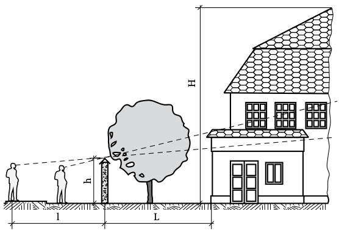
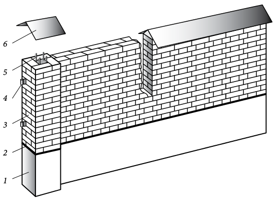

Спочатку ретельно продумайте, яку саме огорожу вам потрібно. Найпростіша схема допоможе в загальних рисах зрозуміти, який паркан вам підходить. Як видно, при висоті огорожі h нижня частина об'єкта, розташованого всередині садиби, не проглядається спостерігачем, що знаходиться на відстані I від паркану. Якщо виходити з того, що нижній поверх з прибудованими до нього господарськими спорудами краще приховати від сторонніх поглядів, то, згідно з підрахунками, в більшості випадків оптимальною буде висота огорожі 1,8—2 м. Перелізти через неї людині середнього зросту буде досить важко, а милуватися верхньою частиною будівлі такий паркан не завадить. При необхідності такий розрахунок можна виконати для різних точок меж володінь.

Розрахунок підходящої висоти паркану: H — висота будівлі; h — висота огорожі; L — відстань від огорожі до будівлі; I — відстань від спостерігача до паркану
Стіна такої висоти — досить серйозна споруда, їй потрібні простіночні опори (стовпи). Наприклад, стіну в пів цегли товщиною 120 мм і висотою до 450 мм можна будувати без стовпів (крім кінцевих, які ставлять у будь-якому випадку). При висоті до 675 мм в неї вбудовують квадратні простіночні стовпи (мають товщину не менше подвійної товщини стіни) на відстані 3 м один від одного. Паркан в одину цеглу товщиною 250 мм і заввишки до 1,35 м теж можна побудувати тільки зі стовпами по кутках. При висоті до 1,8 м в стіну вбудовують квадратні простіночні стовпи (мають товщину не менше подвійної товщини стіни) на відстані 3 м один від одного. Крім того, опорні стовпи ставлять там, де потрібна додаткова міцність, — наприклад, для підтримки воріт або хвіртки.
Планування майданчика під стіну з простіночними стовпами роблять наступним чином: вимірюють відстань на яку буде зведена стіна, і розмічають точки, де потрібні стовпи. Це потрібно для того, щоб у цих місцях викласти більш широкий фундамент.
Якщо хочете побудувати цегляний паркан висотою більше 2 м, вам потрібно більш широкий і глибокий фундамент, температурні шви, опорні стовпи (пілони), можливо, посилення цегляної кладки арматурою.
Конструкція стіни цегляного паркану представлена на рисунку.

Конструкція прольоту цегляної стіни: 1 — фундамент; 2 — гідроізоляція; 3 — стовбур; 4 — анкер для навішування воріт; 5 — армування стовбура; 6 — козирок для захисту кладки від опадів
Перш ніж приступати до кладки, потрібно захистити нижню частину огорожі від проникнення поверхневих вод, інакше виявиться споруда недовговічною і паркан швидко почне руйнуватись знизу. Для цього необхідно ізолювати кладку стін огорожі від фундаменту — цоколь викладають вище рівня ґрунту на 100 мм і прокладають гідро- ізоляційний шар. Верхню частину цоколя покривають мастикою, а на неї укладають шар гідроізоляційного матеріалу, наприклад рубероїду. При відсутності мастики укладають рубероїд у два шари, зверху кладуть шар розчину і починають викладати перший ряд цеглин. Правда, для підпірних і вільно стоячих тонких стін подібна гідроізоляція не завжди підходить, оскільки цей шар може знизити міцність кладки. Але в інших випадках, особливо якщо стіна примикає до будинку, гідроізоляція необхідна. Невисокі (менше 600 мм) парканчики у пів цегли можна побудувати прямо на плитах мостового покриття, якщо вони були укладені на основу з щебеню з розчином. Однак для забезпечення міцності і стійкості (особливо на глинистих і торф'яних грунтах) цегляної стіни огорожі слід будувати на відповідному стрічковому фундаменті.